Arquivos SVG originais — verifique se estão corretos antes de incorporar ao brandbook
Nuvem azul com esferas/bolhas internas + texto "SYSLED" em dark. Uso primário em fundos claros.
assets/sysled-logo-principal.svgNuvem e texto em cor sólida escura (#1A1A2E). Para uso em impressão P&B ou contextos minimalistas.
Nuvem e texto em branco. Para uso sobre fundos escuros ou coloridos.

Apenas o símbolo da nuvem com esferas, sem o texto "SYSLED". Para favicons, avatares e espaços reduzidos.
assets/sysled-icone.svg4 variantes SVG encontradas e copiadas para sysled-brandbook/assets/
| Arquivo | Uso | Tamanho |
|---|---|---|
| sysled-logo-principal.svg | Logo completa, fundo claro | 3.4 KB |
| sysled-logo-mono.svg | Monocromática, P&B | 853 B |
| sysled-logo-branca.svg | Branca, fundos escuros | 1.1 KB |
| sysled-icone.svg | Apenas nuvem, favicons | 2.2 KB |